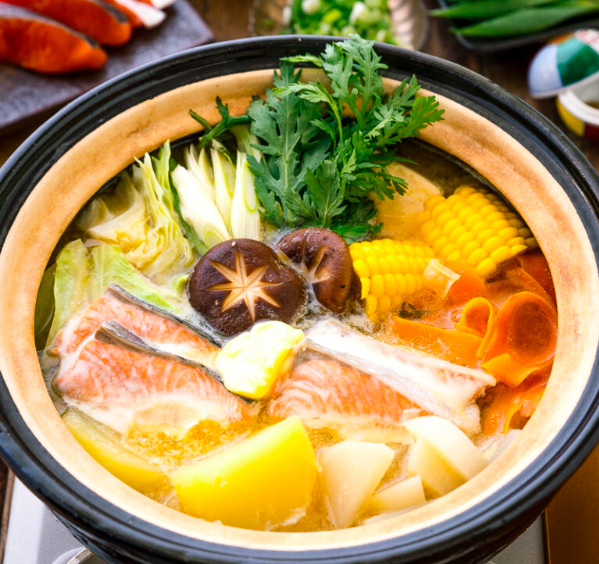

Hokkaido Salmon Hotpot

Warm up thy winters with this japanese beef-and-potato stew
There are days when you feel like eating a bit healthier.
In that case, try some fish hotpot from northernmost reaches of Samurai Land!
Ingredients
- Salmon
- Potatoes
- The Broth – kombu dashi
- Shirataki noodles (Ito Konnyaku)
- ...
- SThe Miso Sauce– miso, mirin, sake, and soy sauce
Steps
- Cut all the ingredients and make the miso sauce.
- Cook hard vegetables in kombu dashi for 10-15 minutes.
- ...
- Cook salmon and the rest of vegetables for 10 minutes and enjoy!